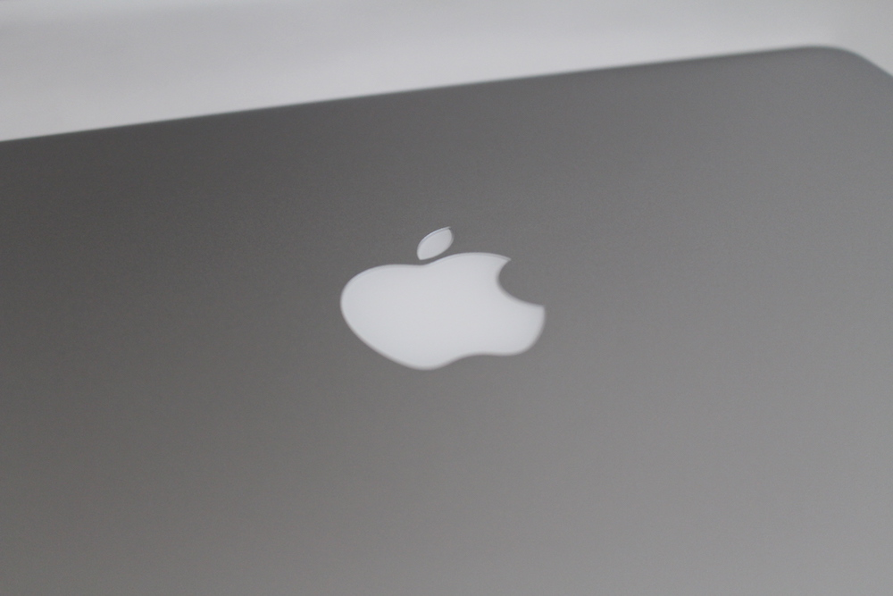

A groundbreaking Retina display. A new force-sensing trackpad. All-flash architecture. Powerful dual-core and quad-core Intel processors. Together, these features take the notebook to a new level of performance. And they will do the same for you in everything you create.
When you pack so many pixels into a display — over 4 million on the 13‑inch model and over 5 million on the 15‑inch model — the results are positively stunning.
The pixel density is so high, your eyes can’t discern individual pixels. Images take on a new level of realism. A spectacular 2560-by-1600 resolution on the 13‑inch MacBook Pro and an equally impressive 2880-by-1800 resolution on the 15‑inch MacBook Pro let you see more of your high-resolution images with pixel-for-pixel accuracy.
The new Force Touch trackpad takes all the capabilities of Multi-Touch and adds force sensors that detect subtle differences in the amount of downward pressure you apply.
With the fifth-generation dual-core Intel Core i5 or Intel Core i7 processor, the 13‑inch MacBook Pro with Retina display lets you take your most performance-hungry apps on the road. That means wherever you can take your camera, you can take your entire digital photo studio. Hyper-Threading technology, which enhances performance by letting each core handle multiple tasks simultaneously, is included in every model.
The 13‑inch MacBook Pro with Retina display features Intel Iris Graphics 6100 to handle both everyday tasks and graphics-intensive creative apps. Scroll through large photo albums with ease. Play games with amazing detail. Even connect an external display or two. It’s just another way this 13‑inch MacBook Pro is small on size but big on performance.

The 13‑inch MacBook Pro lasts up to 10 hours between charges. And the 15‑inch model lasts up to 9 hours. 1 That’s an hour longer than previously for each model. And they deliver 12 hours and 9 hours of iTunes movie playback, respectively. That’s impressive battery life for any notebook.
Thanks to the superfast read and write performance of the PCle-based flash storage, you’ll notice a difference in whatever you do. Starting up is really fast, apps launch quickly, and navigating the desktop feels fluid and responsive.
Fast and versatile, Thunderbolt 2 provides up to 20Gb/s of bandwidth to each external device. So you’re more than ready for the next generation of high-performance peripherals and displays. You can connect massive amounts of storage and add a PCI expansion chassis.
Thin and light, MacBook Pro is designed to go anywhere — including places with less-than-stellar lighting. A built-in sensor detects changes in ambient light and adjusts the keyboard and display brightness automatically. So you’re never left in the dark.